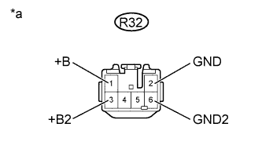

DTC B1593 No Response from Stereo Component Amplifier |
DTC B15D3 Stereo Component Amplifier Disconnected |
| DTC Code | DTC Detection Condition | Trouble Area |
| B1593 | No response to the diagnostic memory request from the master unit. |
|
| B15D3 | A device that is listed in the MOST network connected device record of the master unit is missing. |
| 1.CHECK OPTIONAL COMPONENTS (INCLUDING ASSOCIATED WIRING) |
Check for optional components.
Check that optional components (including associated wiring) which generate radio waves are not installed.
| Result | Proceed to |
| Optional components (including associated wiring) are installed | A |
| Optional components (including associated wiring) are not installed | B |
|
| ||||
| A | |
| 2.REMOVE OPTIONAL COMPONENTS (INCLUDING ASSOCIATED WIRING) |
Remove the optional components (including associated wiring).
| NEXT | |
| 3.CHECK FOR DTC |
Clear the DTCs (Click here).
Check for DTCs and check if the same trouble occurs again.
|
| ||||
| OK | ||
| ||
| 4.CHECK HARNESS AND CONNECTOR (STEREO COMPONENT AMPLIFIER - BATTERY AND BODY GROUND) |
|  |
Disconnect the R32 stereo component amplifier assembly connector.
Measure the resistance according to the value(s) in the table below.
| Tester Connection | Condition | Specified Condition |
| R32-2 (GND) - Body ground | Always | Below 1 Ω |
| R32-6 (GND2) - Body ground | Always | Below 1 Ω |
Measure the voltage according to the value(s) in the table below.
| Tester Connection | Condition | Specified Condition |
| R32-1 (+B) - R32-2 (GND) | Always | 11 to 14 V |
| R32-3 (+B2) - R32-2 (GND) | Always | 11 to 14 V |
| *a | Front view of wire harness connector (to Stereo Component Amplifier Assembly) |
|
| ||||
| OK | |
| 5.CHECK HARNESS AND CONNECTOR (DISPLAY AND NAVIGATION MODULE DISPLAY - STEREO COMPONENT AMPLIFIER) |
Disconnect the H2 display and navigation module display connector.
Disconnect the R34 stereo component amplifier assembly connector.
Measure the resistance according to the value(s) in the table below.
| Tester Connection | Condition | Specified Condition |
| H2-3 (MO+) - R34-4 (MI+) | Always | Below 1 Ω |
| H2-7 (MO-) - R34-10 (MI-) | Always | Below 1 Ω |
| H2-6 (SLDO) - R34-5 (SLDI) | Always | Below 1 Ω |
| H2-3 (MO+) - Body ground | Always | 10 kΩ or higher |
| H2-7 (MO-) - Body ground | Always | 10 kΩ or higher |
| H2-6 (SLDO) - Body ground | Always | 10 kΩ or higher |
|
| ||||
| OK | |
| 6.CHECK HARNESS AND CONNECTOR (STEREO COMPONENT AMPLIFIER - RADIO RECEIVER) |
Disconnect the R34 stereo component amplifier assembly connector.
Disconnect the H1 radio receiver assembly connector.
Measure the resistance according to the value(s) in the table below.
| Tester Connection | Condition | Specified Condition |
| R34-6 (MO+) - H1-9 (MI+) | Always | Below 1 Ω |
| R34-12 (MO-) - H1-23 (MI-) | Always | Below 1 Ω |
| R34-11 (SLDO) - H1-10 (SLDI) | Always | Below 1 Ω |
| R34-6 (MO+) - Body ground | Always | 10 kΩ or higher |
| R34-12 (MO-) - Body ground | Always | 10 kΩ or higher |
| R34-11 (SLDO) - Body ground | Always | 10 kΩ or higher |
|
| ||||
| OK | |
| 7.REPLACE STEREO COMPONENT AMPLIFIER ASSEMBLY |
Clear the DTCs (Click here).
Replace the stereo component amplifier assembly (Click here).
Clear the DTCs (Click here).
Check for DTCs and check if the same trouble occurs again.
|
| ||||
| OK | ||
| ||